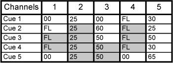
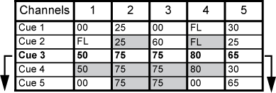
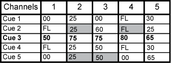
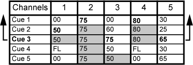

Eos is, by default, a tracking console. This means two things. First, tracking relates to how cue lists are created. Once data is in a cue list, it will remain a part of that cue list, at its original setting, until a new instruction is provided or until it is removed from the cue list using filters or null commands.
Secondly, tracking relates to how changes to cue data are handled. Unless otherwise instructed by a Cue Only command, changes to a parameter in a cue will track forward through the cue list until a move instruction (or block command) is encountered.
It is possible to change the default setting of Eos to “Cue Only” in About Setup . This prevents changes from tracking forward into subsequent cues, unless overridden with a track instruction. See Track for more information.
Eos also has a [Cue Only/Track] button that allows you to record or update a cue as an exception to the default setting. Therefore, if the console is set to Tracking, the button acts as Cue Only. If console is set to Cue Only, it behaves as a Track button.
When you create a new cue, any unchanged channel parameter data from the previous cue is tracked into the new specified cue. Any changes in this new cue will also track forward into subsequent cues until a move instruction or a block flag is encountered. In the example below, the gray boxes indicate tracked values and the white boxes indicate move instructions.

When in tracking mode, edits made to an existing cue will track forward through the cue list until a move instruction is encountered. Changes made to Cue 3 will affect the cue list as shown below in bold.

The [Cue Only/Track] key is an exception to this behavior. [Cue Only/Track] button combined with [Record] or [Update] modifies standard tracking behavior. When you record a cue in the middle of the cue list, using the [Q Only] button will prohibit new information from tracking into the subsequent cue, and will protect the previously tracking levels by adding a move instruction into the next cue for those levels. When you rerecord or update a cue, the modifications will not track forward. Using [Record] <Cue> [3] [Q Only] [Enter] would affect the cue list as shown below.

{Trace} works just like Tracking mode, except it allows changes to be tracked backwards though the cue list, until it sees a move instruction. In the example below, the channel levels have been adjusted while cue 3 is live on stage. Using Trace will take those adjusted levels and update them into the cues as follows: channel 1's new level is recorded into cue 2, channel 2's level is recorded into cue 1, and channel 3's level is recorded into cue 3. This is because the move instruction for those channels are contained in those cues. In the case of channels 1 and 2, their new level will track into cue 3.Using [Record] <Cue> [3] {Trace} [Enter] would affect the cue list as shown below in bold.

To force that channel’s new value to go backward in the cue list, {Trace} {Trace} can be used.
For information on using [Update] and {Trace}, See Using Trace .